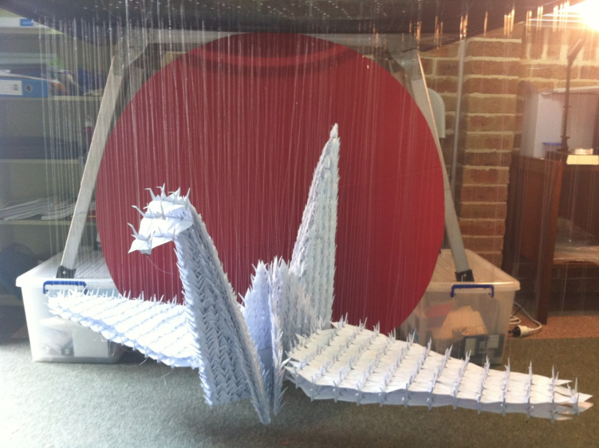
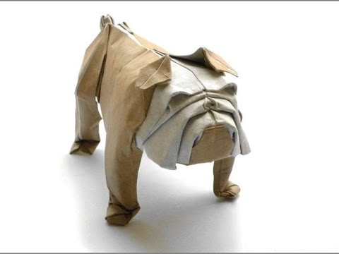

Origami Designs
About Us
Follow Us!
CrowCeption

- Origami crow made up of smaller crows
- The crow is one of the best known origami animals
- Crows hold funerals for eachother where they gather around the body but never touch it
BullGami

- Supposedly takes two minutes to make
- Bulldogs were close to extinction but were brought back by dog lovers
Folded Wings

- Click on this image for instructions on 11 awesome dragons!
- This specific dragon is designed by Kade Chan, and is a Fiery dragon
- The video of the dragon being made is almost a whopping 50 minutes long